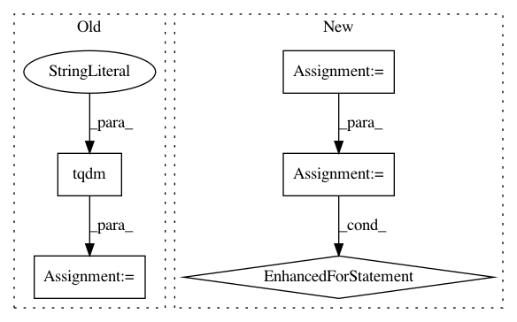

9ebc0abc8e85a2fa722aaaf75f8c8793e95ea12f,tools/sort.py,Sort,sort_face,#Sort#,167
Before Change
filename_list, image_list = self._get_images()
logger.info("Calculating face identifiers...")
preds = np.array([self.vgg_face.predict(img)
for img in tqdm(image_list, desc="Calculating...", file=sys.stdout)])
logger.info("Sorting by ward linkage...")
indices = self.vgg_face.sorted_similarity(preds, method="ward")
img_list = np.array(filename_list)[indices]
After Change
logger.info("Sorting by identity similarity...")
// TODO This should be set in init
self._loader = ImagesLoader(self.args.input_dir)
filenames = []
preds = np.empty((self._loader.count, 512), dtype="float32")
for idx, (filename, image) in enumerate(tqdm(self._loader.load(),
desc="Classifying Faces...",
total=self._loader.count)):
filenames.append(filename)
preds[idx] = self.vgg_face.predict(image)
logger.info("Sorting by ward linkage...")
indices = self.vgg_face.sorted_similarity(preds, method="ward")
img_list = np.array(filenames)[indices]
In pattern: SUPERPATTERN
Frequency: 3
Non-data size: 5
Instances
Project Name: deepfakes/faceswap
Commit Name: 9ebc0abc8e85a2fa722aaaf75f8c8793e95ea12f
Time: 2019-12-15
Author: 36920800+torzdf@users.noreply.github.com
File Name: tools/sort.py
Class Name: Sort
Method Name: sort_face
Project Name: deepfakes/faceswap
Commit Name: 25a2ac95c3b788834db0808307073047747998dd
Time: 2019-10-21
Author: 36920800+torzdf@users.noreply.github.com
File Name: tools/lib_alignments/media.py
Class Name: Faces
Method Name: process_folder
Project Name: IndicoDataSolutions/finetune
Commit Name: 2028dffb2a29570c72f10bcb3e35e33fa7fb1c03
Time: 2018-11-13
Author: madison@indico.io
File Name: finetune/base.py
Class Name: BaseModel
Method Name: _inference